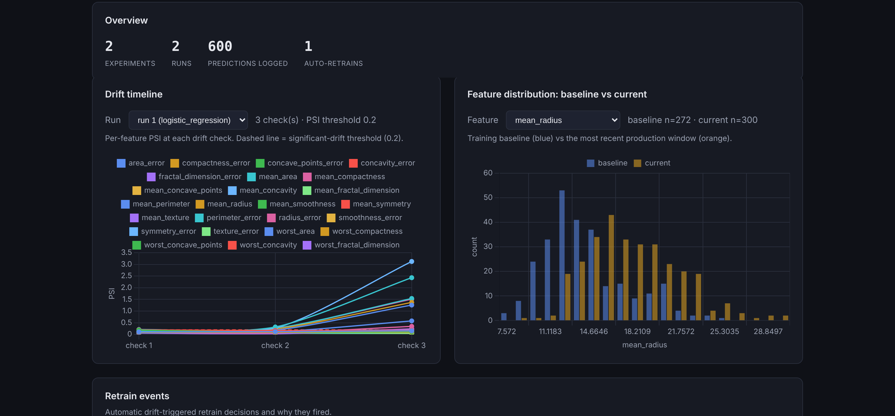

Featured
ModelWatch — ML Drift Detection Platform
2026
A full-stack platform that simulates production ML traffic and detects real-time feature drift using Population Stability Index (PSI) and Kolmogorov–Smirnov tests implemented from first principles. Trains a model, serves predictions, logs every scored request, and auto-retrains when drift crosses a configurable threshold — with a Flask + PostgreSQL backend and a Chart.js dashboard.
- Flask app factory with blueprinted routes for train / predict / drift / dashboard
- PostgreSQL schema tracking experiments, runs, prediction logs, drift reports & retrain events
- PSI and KS tests implemented from scratch, not pulled from a library
- Automated retraining triggered when drifted-feature fraction exceeds a threshold
PythonFlaskPostgreSQL
SQLAlchemyChart.jsscikit-learn